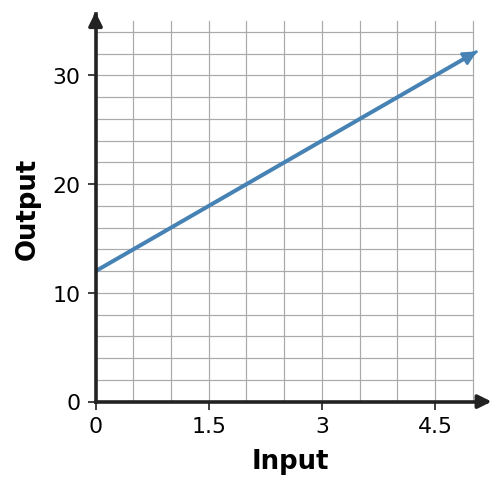
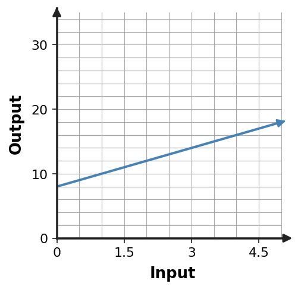
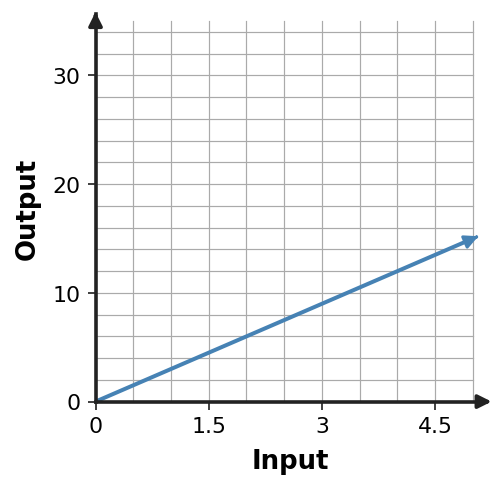
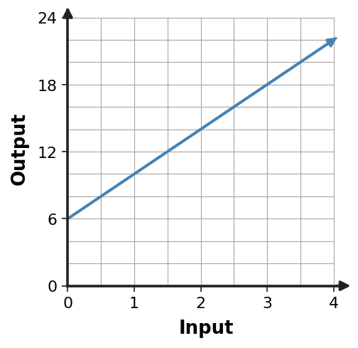
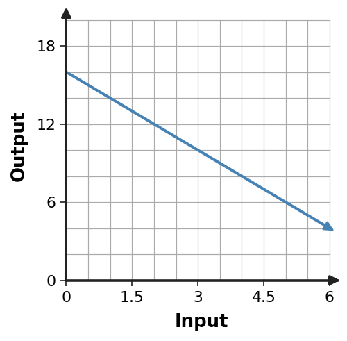

The Case of the Missing Representations
Multiple Representations of Relationships
- Work with a partner or group of 3.
- Match representations by meaning, not by surface features.
- Use at least two pieces of evidence before deciding that cards belong together.
- For every missing-representation task, keep the same input, output, starting value, and repeated change.
Sort three complete relationships
Each relationship has one context, one table, one graph, and one equation. Cut the cards or record the card labels in matching groups.
Context Cards
Admission to the fair is \$12, plus \$4 for each ride ticket.
A phone plan costs \$8 plus \$2 for each gigabyte used.
A student raises \$3 for each mile walked in a fundraiser.
A matches: ______ ______ ______
B matches: ______ ______ ______
C matches: ______ ______ ______
Table Cards
| $x$ | $y$ |
|---|---|
| 0 | 0 |
| 1 | 3 |
| 2 | 6 |
| 3 | 9 |
| $x$ | $y$ |
|---|---|
| 0 | 12 |
| 1 | 16 |
| 2 | 20 |
| 3 | 24 |
| $x$ | $y$ |
|---|---|
| 0 | 8 |
| 1 | 10 |
| 2 | 12 |
| 3 | 14 |
Graph Cards



Equation Cards
Explain one match
Choose one complete set. Give two pieces of evidence that prove all four representations show the same relationship.
Challenge 1 · Context + Table
A water tank starts with 5 gallons and fills at 2 gallons per minute.
| Minutes ($x$) | 0 | 1 | 2 | 3 |
|---|---|---|---|---|
| Gallons ($y$) | 5 | 7 | 9 | 11 |
Write an equation: ______________________________
Explain how the context and table support your equation.
Challenge 2 · Equation + Table
| Input ($x$) | 0 | 1 | 2 | 3 |
|---|---|---|---|---|
| Output ($y$) | 10 | 15 | 20 | 25 |
Create a real-world context that explains both the starting value and repeated change.
Challenge 3 · Graph + Context
A plant is 6 cm tall and grows 4 cm each week.

| Weeks ($x$) | 0 | 1 | 2 | 3 |
|---|---|---|---|---|
| Height ($y$) |
Equation: ______________________________
Explain how the graph supports your table and equation.
Challenge 4 · Graph Only

Create a context, a four-row table, and an equation that could match the graph.
Build the Rule
Two representations belong to the same relationship when...
Which representation made the starting value easiest to see? Which made the repeated change easiest to see?